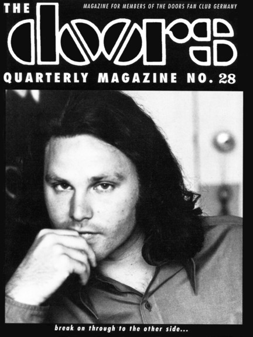

Depending on your computer's safety settings (antivirus, firewall, etc.) the download may generate a standard warning, that is because the magazine is a flipbook in the .EXE file format. We guarantee that the file is absolutely harmless and perfectly safe. |
A new window will open with the magazine for you to read online without the need to download it onto your computer. Again, we guarantee that it's absolutely harmless and perfectly safe. |
|||
|  | The Doors Quarterly Magazine #28
was published on March 20, 1993 and presented a very special cover photo for the fans: Jim Morrison at the Jazz & Pop office in New York, by Janice Coughlan, around June 1970. Patricia Kennealy-Morrison had sent me an original print of this photo along with her kind permission to put it into the DQ. Into? No, instead of putting it “into” I decided to place the photo onto DQ 28’s very front page ;-) Talking about Patricia - she got a whopping 8 pages in #28 for a long letter she wrote and the Q&A she did for my readers (part two in DQ 29). Most interesting question came from Beatrice (France) - why Pam was going to Paris with Jim and not Patricia. Read PKM’s surprising answer on page 16. She also tells Beatrice in detail about the mysterious photos on the back of the book STRANGE DAYS. You’ll also find part 5 of an LA guide for Doors fans in this issue - this part was written by a guy who I do not have contact with anymore. Check the great mix of (then) new books, new official and unofficial CD releases (vinyl was practically dead in ’93), most important of all (in my opinion) used to be the LIVE IN MIAMI CD. Pity - although I sent a couple of fans’ questions to Jerry Hopkins (as announced on page 35), he never found the time to answer them ... The more we step back into time with those early issues of the magazine, the stranger it gets to check those ancient articles and reviews ... and sometimes I wonder why I still agree in 2015 to most I had written at that time in 1993, 22 years ago! At the time of this DQ I received a personal letter from Albert Goldman, infamous author and journalist, who was busy writing a book on Jim Morrison including the topics - Jim was abused by his mother at young age and had sex with her, Jim committed suicide in Paris ... Albert was about sending me some final chapters of that forthcoming book just to see what I was thinking. Unfortunately he died a year later in March of 1994 - and the stuff he was writing will probably never see the light of day. Final quote comes from Roger Daltrey, singer of The Who, about Oliver Stone’s Doors movie: “I knew Jim Morrison personally - and this film was totally shitty. It had nothing to do with the truth.” Thanks, Roger, but still many fans believe in Oliver’s fantasies ... Have fun reading the digital version of The Doors Quarterly 28! A splendid time is guaranteed for all. Rainer Moddemann. And don’t forget: Please note that your digital copy of The Doors Quarterly Magazine 28 hasn't been altered in any way. You get it as it was published on March 20, 1993 (!). Be aware that all addresses (private, phone, email and web) are no longer valid. Books, CDs or posters and other stuff might not be available anymore. Please do not respond to any of the small ads or blame anyone for incorrect details - all writers just did the best they could back in 1992/'93. And - if you’re interested in Grant Jacob’s photos of Jim Morrison? Prints of 11x14 are available for $500.00 each in 2015 (check page 36 of DQ 28 - way back in 1993 they were $50 each) ... Enjoy your digital issue and let us know what you think ... we will continue soon by publishing a digital version of DQ 27. CU and have fun! Thanks to Kevin Chiotis for all of his work! PS ... if you would like to obtain an original paper copy of this Doors Quarterly Magazine 28 (I’ll drop in a free poster) please send a private FB message to Rainer Moddemann - thank you! But hurry, just very few original copies are left ... |
|||